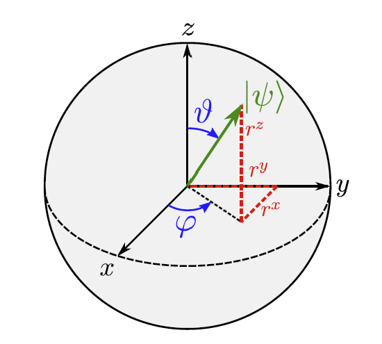
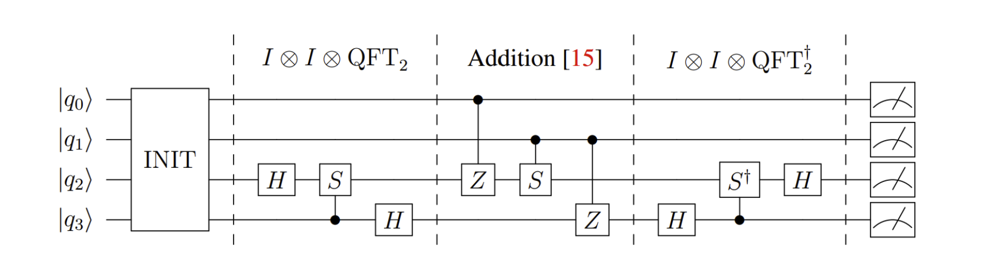

量子编程（Maksim Dimitrijev） Lecture 1
在近二十年间，出现了两种量子计算的主要范式。一种是量子门编程模型（gate-based model of quantum computing），也叫通用量子计算（universal quantum computing）；另一种是量子退火方法（quantum annealing），也叫绝热量子计算（adiabatic quantum computing）。从数学角度上看，这两种模型具备同等的计算能力，但在实践上，两者有显著的不同。
前两次讲座主要介绍量子门编程模型，第一次讲座的内容包括量子比特（quantum bits, qubits）和量子门（quantum gates）、以及量子电路（quantum circuits）。
量子比特和量子门
正如经典计算机一样，量子计算机也一样由门电路构成，不过其用来表示信息的单元为量子比特而非高低电平，其运算模块为量子门而非数字电路的逻辑门。
单个的量子比特
单个量子比特为计算的基本单元，处在 $0$ 和 $1$ 的叠加状态（superposition）之中。我们可以使用类似描述振幅的方式去描述一个量子比特 $|\psi\rangle$：
其中 $\psi_0$ 和 $\psi_1$ 均为复数。可以将 $|0\rangle$ 和 $|1\rangle$ 理解成一组基：
这两个复数需要满足归一化条件：
因此，我们可以表明，
因为全局相位对其状态无影响，我们可以不失一般性地令
其中 $\phi \in [0, 2\pi)$ 表示复系数之间的相对相位。
基于这些特性，我们可以在 Bloch 球面中表达一个量子比特，如下图：

其中的 $r^x, r^y, r^z$ 可以以投影的方式给出：
其中 $\langle\psi|\sigma|\psi\rangle = \vert \psi \rangle^\dagger \sigma \vert \psi \rangle$，其中 $A^\dagger$ 表示 $A$ 的共轭转置，$\sigma^x$，$\sigma^y$，$\sigma^z$ 为 Pauli 矩阵：
关于 Bloch 球面，在第十讲中会有更详尽的叙述。需要注意，在进行测量时，一个量子比特会坍缩到 $0$ 或者 $1$ 的定态，其测量结果为 $0$ 的概率为 $|\psi_0|^2$，为 $1$ 的概率为 $|\psi_1|^2$。
量子门
量子门可以看作是对 $|\psi\rangle$ 在 Bloch 球面上的旋转操作，事实上就是一些 $2 \times 2$ 的酉矩阵。基于 Pauli 矩阵我们可以很方便的构造出绕坐标轴旋转的 Pauli 门：
在实际的实现中，只会实现部分基本旋转，然后将其组合起来以实现真正的旋转门。例如，IBM Q 实现了 $R^x(\frac\theta 2)$ 和 $R^z(\theta)$。
可以按照如下公式组合形成能够完成绕任意轴旋转的旋转门，其中 $\vec n$ 是旋转轴的单位向量：
其中 $I$ 为恒等矩阵，$i = x, y, z$
还有其他常用的门，罗列如下：
其中比较重要的是 $X$ 门，又称 $NOT$ 门、翻转门（flipping gate）；$H$ 门被称为 Hadamard 门，$T$ 和 $S$ 为相移门。
多个量子比特的情形
在具备多个量子比特的情况下，只需要由 Kronecker 积（张量积，tensor product）将它们组合起来即可。我们首先构造这样一组基：
其中 $qi = 0, 1$，可以发现，$q_0q_1\dots q{n-1}$ 是一个大小在 $0$ 到 $2^n - 1$ 之间的数 $j$ 的二进制表示。记 $|q0q_1…q{n-1}\rangle = |j\rangle$，于是可以将一个 $n$ bit 的系统表示为 $\sum\limits_{j}\psi_j|j\rangle$。
涉及多个量子比特的门同样可以用 Kronecker 积表出，记 $U_i$ 为只对第 $i$ 个比特做 $U$ 操作的门，则：
则很显然可以得出：
当使用多个量子比特的系统时，很显然我们不只是想操作其中的某一个比特，而是要对其中的比特进行关联的操作，例如，当某比特为某状态时，对另一比特做某操作。受控的量子门（Controlled-U gate）就实现了这一点：
一个暂时用不上的附注：在做 $CU$ 门运算之后，全局相位会变为相对相位。
常见的多比特门如下：
读者不难自证，它们之间存在如下联系：
量子电路及其编程
量子电路的结构类似下图：

上图表示的是量子电路中的一个 2 位半加器，最左边将几个比特初始化，从左向右依次由不同的量子门对每个比特进行处理，最终结果输出在右侧。
在实际用 Python 进行编程时，一般使用 qiskit 作为电路前端，后端模拟器有以下三种选择：
qasm_simulator：初始值全 $0$，无噪声影响下的测量结果；statevector_simulator：在测量导致量子态坍缩之前的直接计算结果；unitary_simulator：给出计算过程的酉矩阵。